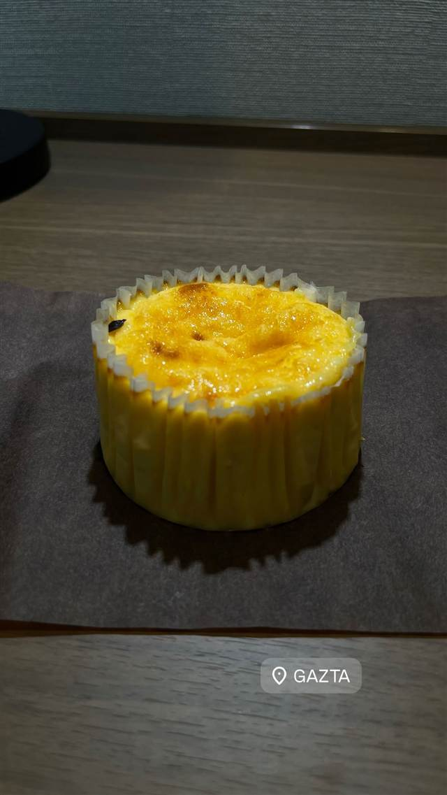
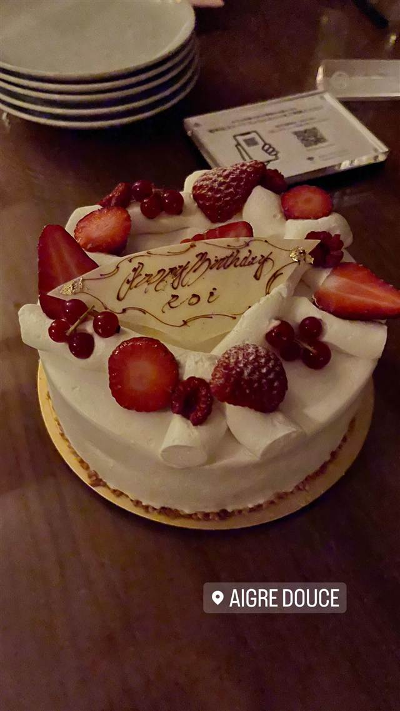
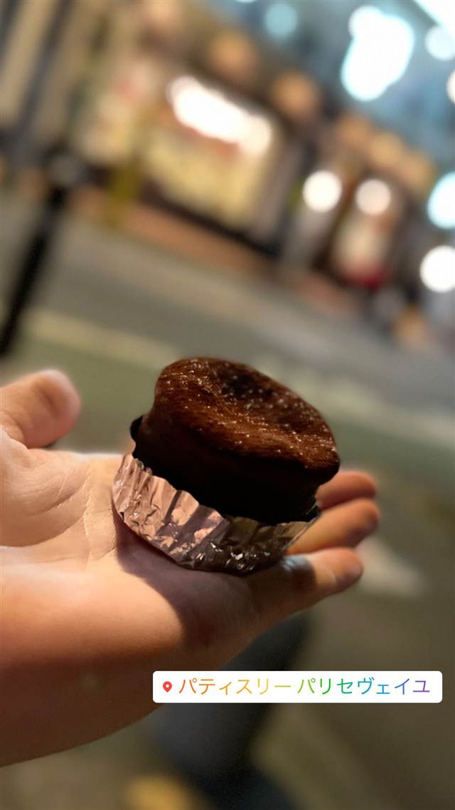
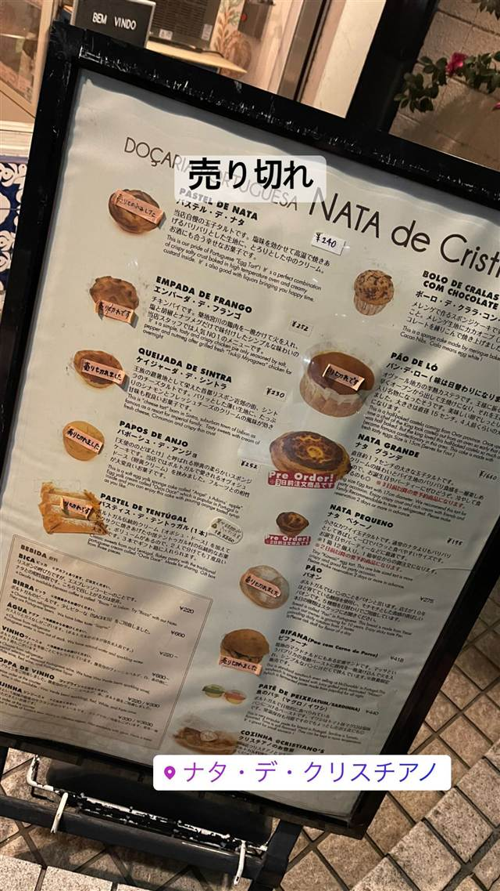

GAZTA（ガスタ） 麻布台ヒルズ店
本場サンセバスチャンの名店直伝レシピのバスクチーズケーキ
GAZTA
WHY GO
サンセバスチャンの名店から家族以外で初めて直接教わった本場レシピを再現
スペイン・バスク地方サンセバスチャンの名物バスクチーズケーキに惚れ込んだシェフ・戸谷尚弘が、本家「ラ・ヴィーニャ」から直接レシピを学び2018年に白金で開業。店名はバスク語で「チーズ」を意味し、日本のバスクチーズケーキブームの火付け役とされる。
TRIVIA
豆知識
- 店名「GAZTA」はバスク語で『チーズ』の意味
- 戸谷シェフは本場サンセバスチャンの名店に何度断られても通い続け、家族以外で初めてレシピを直接教わった
- 『バスクチーズケーキブームの火付け役』と紹介されている
REVIEWS
世間の評判
3.13食べログ
濃厚でなめらかなバスクチーズケーキ
- 濃厚でなめらかにとろけるバスクチーズケーキの食感を評価する声が多い
- 上品なパッケージなので手土産に選ぶ人が多いという声が複数ある
食べログ 口コミ22件
| 創業 | 2018年7月、白金に1号店を開業 |
|---|---|
| 看板 | バスクチーズケーキ |
| こだわり | スペイン・サンセバスチャンの名店「ラ・ヴィーニャ」に何度も通い、家族以外で初めて直接教わった本場仕込みのレシピと製法を忠実に再現。 |
| 掲載・評価 | 食べログ百名店の紹介実績あり |
| どこから | 都心 |
| 予算 | 昼 ¥1,000～¥1,999 夜 ¥1,000～¥1,999 |
| 定休日 | 無休 |
| 場所 | 六本木一丁目 東京都港区麻布台（麻布台ヒルズ ガーデンプラザC） |
| メモ | 麻布台ヒルズ ガーデンプラザC内、通販・ECでも購入可能 |
食べたもの：バスクチーズケーキ
NEARBY
近い店・同じ系統の店
-
 ピザ 神谷町
Pizza 4P's Tokyo
ベトナム発、アジア30店舗超を経て麻布台に上陸した水牛モッツァレラのピザ
昼 ¥3,000～¥3,999 夜 ¥6,000～¥7,999
ピザ 神谷町
Pizza 4P's Tokyo
ベトナム発、アジア30店舗超を経て麻布台に上陸した水牛モッツァレラのピザ
昼 ¥3,000～¥3,999 夜 ¥6,000～¥7,999
-
 イタリアン 神谷町
Balcony by 6th
マリリン・モンローも宿泊した老舗ホテルの系譜を継ぐテラス空間
昼 ¥3,000～¥5,999 夜 ¥6,800～¥9,999
イタリアン 神谷町
Balcony by 6th
マリリン・モンローも宿泊した老舗ホテルの系譜を継ぐテラス空間
昼 ¥3,000～¥5,999 夜 ¥6,800～¥9,999
-
 カフェ 麻布台
% ARABICA
昼 ～¥999 夜 ～¥999
カフェ 麻布台
% ARABICA
昼 ～¥999 夜 ～¥999
-

ケーキ・パフェ 目白駅 AIGRE DOUCE（エーグルドゥース） クープ・デュ・モンド準優勝シェフの苺のショートケーキ 昼 ¥1,000～¥1,999 夜 ¥1,000～¥1,999 -

ケーキ・パフェ 自由が丘 パティスリー パリ セヴェイユ ラデュレ仕込みの技が光るカヌレ、食べログ百名店の一軒 昼 ¥1,000～¥1,999 夜 ¥1,000～¥1,999 -

ケーキ・パフェ 代々木公園駅 ナタ・デ・クリスチアノ（Nata de Cristiano's） 姉妹店の人気デザートが独立したポルトガル風エッグタルト 昼 ～¥999 夜 ～¥999